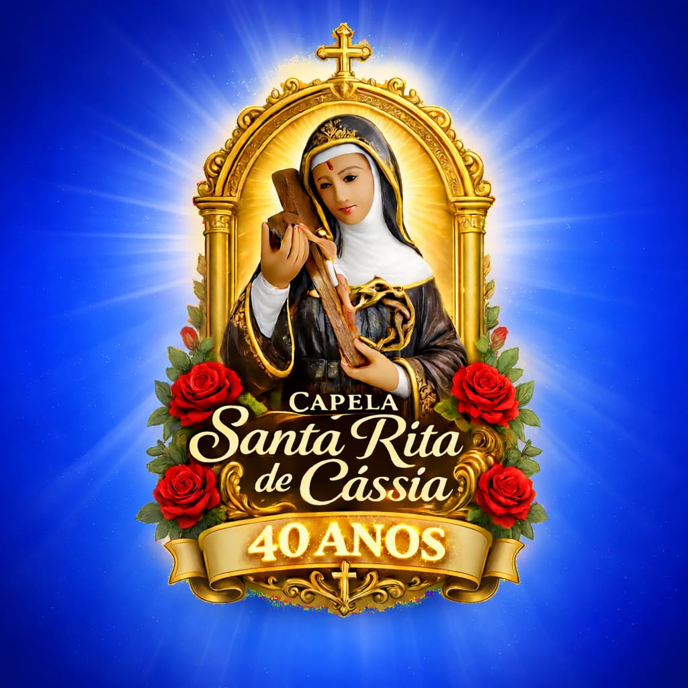
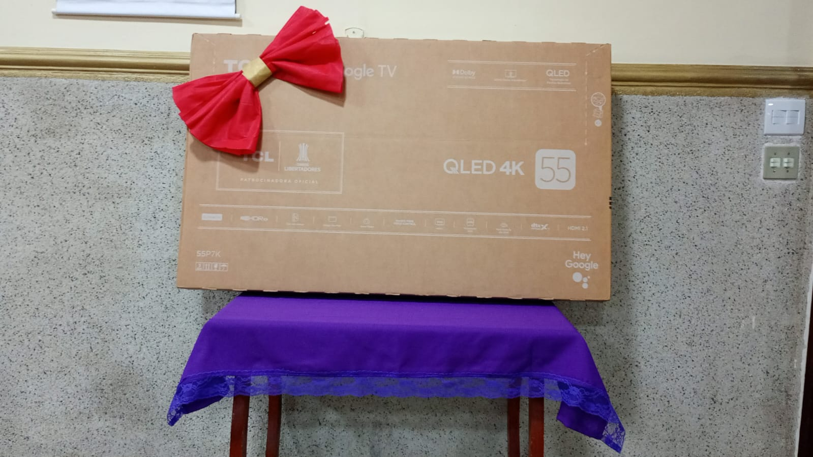
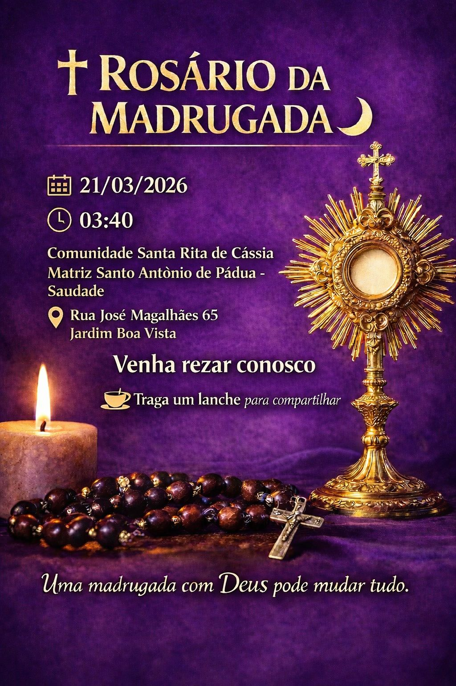

Acompanhe e participe das celebrações e festividades da nossa comunidade.

Prepare-se para a nossa maior festividade do ano! Novena, shows, barracas e momentos de fé.
Inscrições abertas para o evento esportivo que une a fé e a saúde na nossa cidade.

Compre um bilhete para participar e ajudar a Comunidade em seus projetos.

Vamos nos unir em oração neste momento de quaresma.